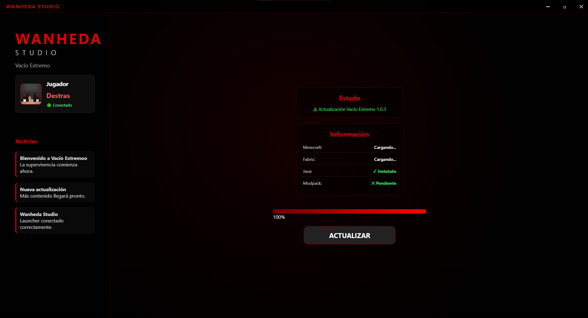
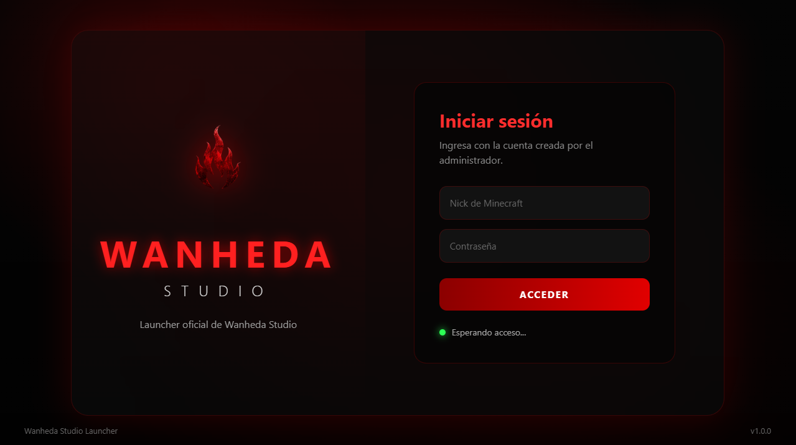
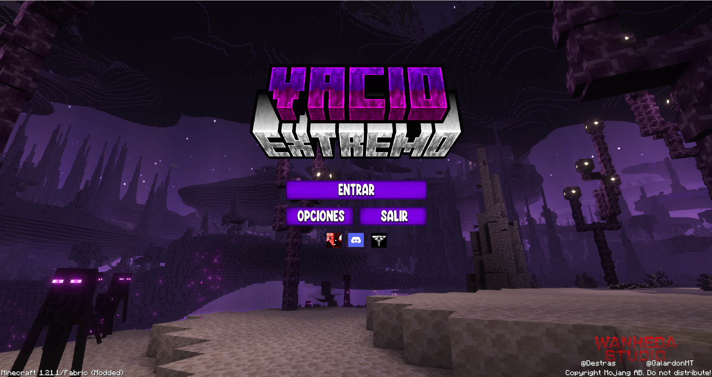

El launcher personalizado para entrar a la experiencia definitiva de Minecraft. Instalación automática, mods configurados y todo listo para jugar.
DESCARGAR LAUNCHERInstala todos los archivos necesarios sin configuraciones complicadas.
Configuración automática para iniciar Minecraft.
El modpack Vacío Extremo preparado para jugar.
Fabric Loader configurado para Minecraft 1.21.1.


